说明
本排名仅为各个枪的类别之内排名，不能作跨类别比较（例如：狙击枪的 S 梯队强度并不等同融合步枪的 S 梯队强度）。
注解中提及到的「双／三硬直组合」指大口径弹药、自带反势不可挡勇士功能的枪、阻止力 Perk 三者的任意组合，这些 Perk 能让战斗人员更容易被你的子弹打出硬直，从而有提升生存的效果。
「弹药生成 Perk」包括空中扳机／沙场备战等传统意义上帮助产弹的 Perk，亦指事不过四、精准连击等凭空生成子弹的 Perk。
划掉的字表示该来源现已不可获取。
榴弹发射器-后膛
| 武器 | 图标 | 排名 | 评级 | 属性 | 框架 | 赛季 | 来源 | 勇士 | 弹药生成 | 枪管 | 弹匣 | 大师 | Perk 1 | Perk 2 | 起源特性 | 注解 |
|---|---|---|---|---|---|---|---|---|---|---|---|---|---|---|---|---|
| VS 速度指挥 | 1 | S | 虚空 | 区域拒止框架 | 29 | 晚星之主 | 69 | 高速发射 | 高速弹药 | 填装 操控性 | 冲击支撑 爆破专家 不屈 | 失衡弹药 连锁反应 羸弱能量球 | 布瑞遗产 | 最佳能量位区域拒止榴弹 几乎所有你需要的 Perk 都有 起源也优秀 | ||
| 驱逐引擎 | 2 | S | 冰影 | 区域拒止框架 | 29 | 巅峰行动 | 58 | 高速发射 | 高速弹药 | 填装 操控性 | 空中扳机 自动填装枪套 霜华窃取者 | 连锁反应 聚合充能 结晶残花 | 加速突击 | 唯一能用空中扳机产弹药的区域拒止 冰影需要的 Perk 也几乎全有 | ||
| 机巧纬线 | 3 | S | 缚丝 | 微型导弹框架 | 28 | 忠诚纪念碑 | 70 | 高速发射 | 高速弹药 尖刺榴弹 内爆弹药 | 填装 操控性 | 空中扳机 嫉妒军械库 切割 | 双脚架 聚合充能 连锁反应 | Häkke 突入武装 | 最佳移动用和轮切输出用榴弹 | ||
| 送魂者 | 4 | S | 电弧 | 区域拒止框架 | 29 | 异端深渊 | 70 | 高速发射 | 高速弹药 | 填装 操控性 | 自动填装枪套 即兴弹药 风暴涌动 | 聚合充能 伏特子弹 换挡 | 异端行径 | 能量位区域拒止+聚合充能 还有 8% 增伤起源特性 | ||
| 庆典飞行 | 5 | S | 缚丝 | 区域拒止框架 | 27 | 忠诚纪念碑 | 69 | 高速发射 | 高速弹药 | 填装 操控性 | 切割 爆破专家 嫉妒军械库 | 羸弱能量球 我为人人 幼雏 | 梦想差事 | 能大范围附加切割的武器 除此就是很普通的区域拒止 | ||
| 经纬仪 | 6 | A | 电弧 | 微型导弹框架 | 27 | 忠诚纪念碑 萨瓦拉 | 69 | 高速发射 | 高速弹药 尖刺榴弹 内爆弹药 | 填装 操控性 | 重建 | 狂乱 | 问题解决者 | 唯一的能量位移动用 GL | ||
| 迷失信号 | 7 | A | 冰影 | 区域拒止框架 | 24 | 周而复始 | 63 | 高速发射 | 高速弹药 | 填装 操控性 | 自动填装枪套 金中藏弹 战略家 | 我为人人 泉源 爆破专家 | 活性放射体液转换器 | 除起源外 基本是驱逐引擎的降级版 | ||
| 铭纹-41 | 8 | A | 烈日 | 区域拒止框架 | 28 | 忠诚纪念碑 枪匠 | 59 | 高速发射 | 高速弹药 | 填装 操控性 | 自动填装枪套 | 辉耀炽热 斩首武器 羸弱能量球 | Suros 协同 | 基本只用于匹配激涌 其他方面不如 VS 速度指挥 | ||
| 新太平洋碑文 | 9 | A | 冰影 | 波形框架 | 29 | 深渊机灵 | 70 | 高速发射 | 高速弹药 | 填装 操控性 | 连锁反应 不屈 空中扳机 | 转向 结晶残花 收割者贡品 | 恢复仪式 | 从框架看是转向的最佳使用者之一 但依然不太主流 | ||
| 自制 猛攻版本 | 10 | A | 电弧 | 波形框架 | 29 | 猛攻 | 67 | 高速发射 | 高速弹药 | 填装 操控性 | 转向 空中扳机 不屈 | 连锁反应 铤而走险 伏特子弹 | 不屈不挠 | 能量位新太平洋碑文 4 号位 Perk 选择更差 但起源可能更好 | ||
| 狂野飞禽 | 11 | A | 虚空 | 双重火力 | 29 | 守望者尖塔 | 10 | 高速发射 | 尖刺榴弹 迷失手雷 | 填装 操控性 | 嫉妒军械库 自动填装枪套 | 聚合充能 枯萎凝视 | 特克斯平衡枪托 | 在轮切输出这个用途上等同能量位机巧纬线 | ||
| 永久冻土 | 12 | A | 冰影 | 波形框架 | 28 | 忠诚纪念碑 | 59 | 高速发射 | 高速弹药 | 填装 操控性 | 霜华窃取者 羸弱能量球 即兴弹药 | 结晶残花 收割者贡品 | 曙光惊喜 | 两把羸弱波形里可能更好的一把 没有转向但仍不错 | ||
| 狂野飞禽 玖的仪式版本 | 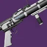 | 13 | B | 虚空 | 双重火力 | 26 | 10 | 高速发射 | 尖刺榴弹 迷失手雷 | 填装 操控性 | 嫉妒军械库 自动填装枪套 | 诱导推销 枯萎凝视 金中藏弹 | 重力井 | 用于致盲时 Perk 比普通版更好 但因没有聚合充能其他方面更差 | ||
| 礼拜 | 14 | B | 冰影 | 双重火力 | 29 | 世界掉落 枪匠 | 29 | 高速发射 | 尖刺榴弹 迷失手雷 | 填装 操控性 | 嫉妒军械库 | 冰冷弹匣 | 黑暗乙太收割者 | 基本只用来施加减速 或许能进破冰者轮切手法 仅此而已 | ||
| 浪漫之死 | 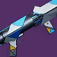 | 15 | B | 虚空 | 波形框架 | 27 | 忠诚纪念碑 | 61 | 高速发射 | 高速弹药 | 填装 操控性 | 冲击支撑 | 失衡弹药 连锁反应 | 坚韧 | 可能有最好的波形 Perk 和优秀起源 但受当前环境影响并不主流 | |
| 自制 | 16 | B | 电弧 | 波形框架 | 16 | 门徒誓约 | 67 | 高速发射 | 高速弹药 | 填装 操控性 | 风暴涌动 不屈 爆破专家 | 连锁反应 换挡 | 灵魂饮者 | 比勇者版本全能性差很多 基本只有起源是优点 | ||
| 新太平洋碑文 玖的仪式版本 | 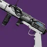 | 17 | B | 冰影 | 波形框架 | 26 | 70 | 高速发射 | 高速弹药 | 填装 操控性 | 金中藏弹 不屈 | 转向 连锁反应 杀戮弹匣 | 重力井 | 最适合在野车里拿重力井当弹药吸尘器 其他方面就是比普通版差 | ||
| 拯救者的喝彩 | 18 | B | 电弧 | 轻质框架 | 29 | 巅峰行动 | 70 | 高速发射 | 尖刺榴弹 | 填装 操控性 | 涓流充能 连锁反应 | 换挡 收割者贡品 伏特子弹 | 加速突击 | Perk 组合优秀 还能涓流充能 DPS 的冷门用途 可惜是轻质 | ||
| 严苛言语 | 19 | B | 虚空 | 波形框架 | 20 | 枪匠 | 57 | 高速发射 | 高速弹药 | 填装 操控性 | 沙场备战 泉源 | 冲击支撑 失衡弹药 | 战场检验 | 3 号位差 可通过神器来绕过这缺点 其他方面不错 | ||
| 殉道者的复仇 | 20 | B | 烈日 | 波形框架 | 24 | 仄 | 57 | 高速发射 | 高速弹药 | 填装 操控性 | 沙场备战 治疗弹匣 自动填装枪套 | 辉耀炽热 杀戮弹匣 | 光照无影 | 优秀的波形框架 可通过沙场备战加弹药生成 起源联动也不错 | ||
| 不散恐惧 | 21 | B | 冰影 | 轻质框架 | 29 | 二象性 | 66 | 高速发射 | 迷失手雷 | 填装 操控性 | 自动填装枪套 失调协议 | 双脚架 冰冷弹匣 连锁反应 | 苦涩怨恨 | 有双脚架 但用途不明确 是不错的致盲选择 | ||
| 野猪獠牙 | 22 | B | 缚丝 | 波形框架 | 29 | 铁旗 | 69 | 高速发射 | 高速弹药 | 填装 操控性 | 切割 | 连锁反应 幼雏 | 藏匿之狼 | 溅射 Perk 和起源都不错 但相比高梯队的波形影响力较低 | ||
| 火爆秉性 | 23 | B | 烈日 | 波形框架 | 16 | 暗屋之声 | 62 | 高速发射 | 高速弹药 | 填装 操控性 | 沙场备战 自动填装枪套 | 不屈 我为人人 | 陆地坦克 | 起源优秀 但其他 Perk 相当过时 | ||
| 山巅 猛攻版本 | 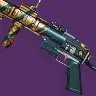 | 24 | B | 动能 | 微型导弹框架 | 29 | 猛攻 | 61 | 高速发射 | 高速弹药 尖刺榴弹 内爆弹药 | 填装 操控性 | 脉冲增幅器 自动填装枪套 金中藏弹 | 狂乱 重组 | 不屈不挠 | 机巧纬线替代品 唯一特殊点是重组 | |
| 老兵权利 | 25 | C | 动能 | 轻质框架 | 20 | ? | 61 | 高速发射 | 迷失手雷 | 填装 操控性 | 金中藏弹 滑行健射 | 自动填装枪套 | 战场检验 | 基本只是高舒适度的致盲选择 | ||
| 暗流涌动 | 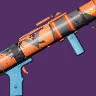 | 26 | C | 电弧 | 波形框架 | 24 | 萨瓦拉 | 68 | 高速发射 | 高速弹药 | 填装 操控性 | 沙场备战 金中藏弹 爆破专家 | 伏特子弹 羸弱能量球 | 先锋平反 | 羸弱能量球 可搭配所有功能 Perk 但没有真正强力清怪配置 起源也糟糕 | |
| 狂野风格 | 27 | C | 烈日 | 双重火力 | 29 | 萨瓦拉 | 49 | 高速发射 | 尖刺榴弹 迷失手雷 | 填装 操控性 | 重建 | 诱导推销 腹背受敌 | 特克斯平衡枪托 | 除非匹配激涌 否则是狂野飞禽的绝对下位 Perk 也很受限 | ||
| 点火代码 | 28 | C | 动能 | 轻质框架 | 25 | 仄 永恒挑战 | 64 | 高速发射 | 迷失手雷 | 填装 操控性 | 滑行射击 金中藏弹 | 狂乱 | 熔岩激涌 | 类似老兵权利 但没有自填 | ||
| 赦免尘埃 | 29 | C | 动能 | 轻质框架 | 15 | 永恒挑战 | 67 | 高速发射 | 迷失手雷 | 填装 操控性 | 自动填装枪套 | 爆破专家 | 热切换 | 类似老兵权利 但没有滑行健射 | ||
| 奥尔文之槌 | 30 | C | 虚空 | 轻质框架 | 6 | 铁旗 | 70 | 高速发射 | 迷失手雷 | 填装 操控性 | 沙场备战 | 自动填装枪套 | 无 | 比空容器好一点 | ||
| 空容器 | 31 | C | 烈日 | 轻质框架 | 29 | 萨瓦拉 | 63 | 高速发射 | 迷失手雷 | 填装 操控性 | 自动填装枪套 | 爆破专家 | 战场检验 | 基本是未强化版赦免尘埃 | ||
| 震耳低语 | 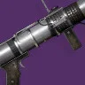 | 32 | D | 虚空 | 波形框架 | 12 | 仄 永恒挑战 | 48 | 高速发射 | 高速弹药 | 填装 操控性 | 金中藏弹 | 不屈 泉源 | 无 | 没有真正跟得上时代的波形框架 Perk | |
| 浪子回头 | 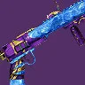 | 33 | D | 电弧 | 轻质框架 | 20 | 节点.超控.阿瓦隆 | 64 | 高速发射 | 迷失手雷 | 填装 操控性 | 金中藏弹 | 伏特子弹 | 高尚事迹 | 没有好的回填 Perk 也没好清怪 Perk 什么都没有 | |
| 真言者 | 34 | D | 虚空 | 轻质框架 | 24 | 枪匠 | 65 | 高速发射 | 迷失手雷 | 填装 操控性 | 盗墓者 | 冲击支撑 | 战场检验 | 真的是近年赛季里产出的最差武器之一 |
融合步枪
| 武器 | 图标 | 排名 | 评级 | 属性 | 框架 | 赛季 | 来源 | 勇士 | 弹药生成 | 枪管 | 弹匣 | 大师 | Perk 1 | Perk 2 | 起源特性 | 注解 |
|---|---|---|---|---|---|---|---|---|---|---|---|---|---|---|---|---|
| 睿智责难 | 1 | S | 电弧 | 高冲击力框架 | 29 | 铁旗 | 28 | 槽化枪管 箭头制退器 | 加速线圈 | 充能时间 | 丰盈满溢 失调协议 | 受控连射 洪涝 | 藏匿之狼 | 最佳框架 当前最强清怪和伤害 Perk 起源不错 | ||
| 冰川矿物 | 2 | S | 虚空 | 高冲击力框架 | 25 | 26 | 槽化枪管 箭头制退器 | 加速线圈 | 充能时间 | 丰盈满溢 | 受控连射 枯萎凝视 | 曙光惊喜 | 没失调协议但有枯萎凝视 起源不如睿智责难 | |||
| 既定观点问题 | 3 | S | 电弧 | 高冲击力框架 | 29 | 萨瓦拉 | 30 | 槽化枪管 箭头制退器 | 加速线圈 | 充能时间 | 丰盈满溢 自动填装枪套 嫉妒刺客 | 受控连射 洪涝 | 问题解决者 | 多种回填 Perk + 标准伤害 Perk | ||
| 渐速音-42 | 4 | A | 缚丝 | 精密框架 | 29 | 赛雀联赛 | 31 | 槽化枪管 箭头制退器 | 加速线圈 | 充能时间 | 丰盈满溢 切割 | 聚合充能 受控连射 腹背受敌 | 羽量 | 伤害 Perk 和丰盈满溢都很优秀 只是框架不是最好的 | ||
| 隐士 | 5 | A | 烈日 | 高冲击力框架 | 22 | 仄 | 21 | 槽化枪管 箭头制退器 | 加速线圈 | 充能时间 | 嫉妒刺客 | 受控连射 洪涝 | 热血上头 | 嫉妒刺客很过时 其他方面都还好 | ||
| 灵巫力量 | 6 | A | 电弧 | 适配框架 | 21 | 最后一愿 | 29 | 槽化枪管 箭头制退器 | 加速线圈 | 充能时间 | 回转弹药 集体爆破 杀戮弹匣 | 聚合充能 受控连射 | 爆炸协议 | 手感优秀 框架一般 有集体爆破可以玩小众手法 | ||
| 笛卡尔坐标 | 7 | A | 烈日 | 速射框架 | 29 | 欧洲无人区 | 49 | 槽化枪管 箭头制退器 | 加速线圈 | 充能时间 | 重建 集体爆破 失调协议 | 聚合充能 受控连射 洪涝 | 老兵睿智 | 游走/伤害 Perk 优秀 不是最佳的失调协议使用者 有集体爆破可以玩小众手法 | ||
| 夜神长存 V | 8 | A | 缚丝 | 高冲击力框架 | 29 | 世界掉落 枪匠 | 21 | 槽化枪管 箭头制退器 | 加速线圈 | 充能时间 | 嫉妒刺客 | 受控连射 | 万能卡牌 | 嫉妒刺客很过时 可选项很有限 起源和 DPS 不太相关 | ||
| 悲歌-44 | 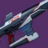 | 9 | A | 虚空 | 高冲击力框架 | 28 | 忠诚纪念碑 枪匠 | 20 | 槽化枪管 箭头制退器 | 加速线圈 | 充能时间 | 失调协议 | 失衡弹药 枯萎凝视 | Suros 协同 | 睿智责难同框架但有失调协议 也有枯萎凝视 | |
| 弥达的清算 | 10 | A | 电弧 | 高冲击力框架 | 18 | 国王的陨落 | 28 | 槽化枪管 箭头制退器 | 加速线圈 | 充能时间 | 逼入绝境 沙场备战 | 换挡 腹背受敌 | 火力满溢 | 很吃环境又很烦的伤害 Perk 起源能超填弹匣但不够稳定 3 号位也糟糕 | ||
| 插头一号 | 11 | B | 电弧 | 精密框架 | 29 | 萨瓦拉 | 40 | 槽化枪管 箭头制退器 | 加速线圈 | 充能时间 | 重建 | 受控连射 伏特子弹 | 问题解决者 | 标准超填+伤害 Perk 只是框架不是最佳 | ||
| 轴向缺漏 | 12 | B | 烈日 | 精密框架 | 24 | 苍白之心 | 30 | 槽化枪管 箭头制退器 | 加速线圈 | 充能时间 | 重建 | 受控连射 腹背受敌 | 庄家之选 | 标准超填+伤害 Perk 只是框架不是最佳 | ||
| 主原料 | 13 | B | 电弧 | 精密框架 | 29 | 火力战队行动 | 40 | 槽化枪管 箭头制退器 | 加速线圈 | 充能时间 | 涓流充能 | 换挡 洪涝 | 加速突击 | 3 号位令人失望 但起源特性让它勉强升到这一档 | ||
| 负罪感 | 14 | B | 冰影 | 适配框架 | 27 | 试炼 | 29 | 槽化枪管 箭头制退器 | 加速线圈 | 充能时间 | 嫉妒军械库 | 聚合充能 受控连射 冰冷弹匣 | 轻捷脚步 | 能晕全勇士 比解脱快 3 号位略弱 但整体并不会让这把枪成为主流 | ||
| 解脱 | 15 | B | 冰影 | 精密框架 | 16 | 门徒誓约 | 39 | 槽化枪管 箭头制退器 | 加速线圈 | 充能时间 | 结晶残花 爆破专家 | 冰冷弹匣 连锁反应 | 灵魂饮者 | 双溅射 Perk 有意思 但弹药经济一般 能晕全勇士的功能在多数场景不重要 | ||
| 零镇静 | 16 | B | 虚空 | 速射框架 | 29 | 巅峰行动 | 55 | 槽化枪管 箭头制退器 | 加速线圈 | 充能时间 | 丰盈满溢 重建 嫉妒军械库 | 元素磨砺 受控连射 | 加速突击 | 超填和伤害 Perk 优秀 还有很强的 DPS 起源 只是框架差 | ||
| 激流 | 17 | B | 冰影 | 速射框架 | 28 | 忠诚纪念碑 沙克斯 | 46 | 槽化枪管 箭头制退器 | 加速线圈 | 充能时间 | 丰盈满溢 自动填装枪套 | 受控连射 冰冷弹匣 | 加速突击 | 冰冷弹匣手感好 + 超填和伤害 Perk +强 DPS 起源 只是框架差 | ||
| 碎梦者 | 18 | B | 烈日 | 适配框架 | 29 | 月球 | 31 | 槽化枪管 箭头制退器 | 加速线圈 | 充能时间 | 重建 辉耀炽热 | 受控连射 燃烧野心 | 减员激励 | 标准超填和伤害 Perk 框架不如精密 也有双烈日溅射 Perk | ||
| 狮子鱼-4fr | 19 | B | 冰影 | 速射框架 | 27 | 忠诚纪念碑 萨瓦拉 | 52 | 槽化枪管 箭头制退器 | 加速线圈 | 充能时间 | 重建 金中藏弹 | 元素磨砺 受控连射 冰冷弹匣 | Veist 尖刺 | 整体优秀 Perk 比激流多 只是没有加速突击 | ||
| 信标 | 20 | B | 烈日 | 速射框架 | 28 | 忠诚纪念碑 | 54 | 槽化枪管 箭头制退器 | 加速线圈 | 充能时间 | 回转弹药 丰盈满溢 嫉妒军械库 | 受控连射 诱导推销 | 优秀竞争者 | 超填 Perk 优秀 只是起源不如零镇静 | ||
| 回火发电机 | 21 | C | 电弧 | 攻击型框架 | 29 | 竞技场行动 | 30 | 槽化枪管 箭头制退器 | 加速线圈 | 充能时间 | 回转弹药 即兴弹药 | 换挡 失调协议 震颤反馈 | 煅炉眷属 | 伤害 Perk 组合有意思 可惜在最差融合框架上 能一发上震颤 | ||
| 奥凡迪尔 FR6 | 22 | C | 冰影 | 高冲击力框架 | 29 | 枪匠 | 19 | 槽化枪管 箭头制退器 | 加速线圈 | 充能时间 | 重建 | 冰冷弹匣 | Omolon 流体动力 | 冰冷弹匣中单发伤害最高的 但手感不好 | ||
| VS 重力滞止 | 23 | C | 虚空 | 适配框架 | 29 | 晚星之主 | 36 | 槽化枪管 箭头制退器 | 加速线圈 | 充能时间 | 金中藏弹 爆破专家 | 枯萎凝视 受控连射 | 布瑞遗产 | 充能更快的枯萎凝视枪 | ||
| 狂徒的奖励 | 24 | C | 虚空 | 速射框架 | 25 | 救赎花园 | 52 | 槽化枪管 箭头制退器 | 加速线圈 | 充能时间 | 自动填装枪套 金中藏弹 | 受控连射 枯萎凝视 | 光抑制 | 枯萎凝视+自填+标准伤害 Perk 但框架差 使用不便 | ||
| 塔霍马 01 | 25 | C | 缚丝 | 攻击型框架 | 29 | 扭曲 | 38 | 槽化枪管 箭头制退器 | 加速线圈 | 充能时间 | 丰盈满溢 集体爆破 金中藏弹 | 聚合充能 受控连射 | 腐臭弹药 | Perk 不错但框架最差 有集体爆破可以玩小众手法 | ||
| 散射信号 | 26 | C | 缚丝 | 速射框架 | 23 | 苦命鸳鸯 | 52 | 槽化枪管 箭头制退器 | 加速线圈 | 充能时间 | 丰盈满溢 切割 | 受控连射 | 龙之复仇 | 框架差 Perk 标准 | ||
| 迭代循环 | 27 | C | 电弧 | 速射框架 | 20 | 内欧姆那 | 50 | 槽化枪管 箭头制退器 | 加速线圈 | 充能时间 | 超充弹匣 盗墓者 | 受控连射 | 纳米技术追踪导弹 | 起源优秀 伤害 Perk 堪用 但填装 Perk 和框架都糟糕 | ||
| 后见之明 | 28 | C | 虚空 | 适配框架 | 26 | 仄 | 39 | 槽化枪管 箭头制退器 | 加速线圈 | 充能时间 | 失调协议 | 失衡弹药 | 志愿容器 | 不错的失调协议选择 但被单发伤害更高的框架压制 | ||
| 有限未知 | 29 | C | 烈日 | 攻击型框架 | 27 | 永恒沙漠 | 33 | 槽化枪管 箭头制退器 | 加速线圈 | 充能时间 | 重建 金中藏弹 辉耀炽热 | 受控连射 诱导推销 失调协议 | 参考框架 | 堪用的失调协议选择 Perk 优秀 只是框架很差 | ||
| 增压精准 | 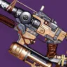 | 30 | C | 缚丝 | 适配框架 | 29 | 铁旗 | 50 | 槽化枪管 箭头制退器 | 加速线圈 | 充能时间 | 失调协议 自动填装枪套 | 幼雏 斩首武器 | 藏匿之狼 | 和失调协议没有好搭配 也没真正的伤害 Perk 中庸的框架上有个自填 | |
| 皇家行刑者 | 31 | C | 烈日 | 适配框架 | 20 | 节点.超控.阿瓦隆 | 34 | 槽化枪管 箭头制退器 | 加速线圈 | 充能时间 | 嫉妒刺客 金中藏弹 | 洪涝 | 高尚事迹 | 嫉妒刺客很过时 + 不错的 Perk 框架一般 | ||
| 高亢 | 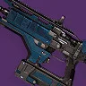 | 32 | C | 缚丝 | 攻击型框架 | 29 | 单人行动 | 38 | 槽化枪管 箭头制退器 | 加速线圈 | 充能时间 | 切割 | 聚合充能 腹背受敌 | 万能卡牌 | Perk 组合独特 但框架差 且没有填装 Perk | |
| 黑夜星辰 IV | 33 | D | 冰影 | 攻击型框架 | 28 | 忠诚纪念碑 萨瓦拉 | 31 | 槽化枪管 箭头制退器 | 加速线圈 | 充能时间 | 小丑皇弹药筒 爆破专家 | 失调协议 结晶残花 | 加速突击 | 失调协议在 3 号位的话会更好 起源好 但框架是最差的 3 号位很差 | ||
| 克鲁瑞斯 FR4 | 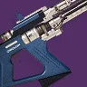 | 34 | D | 电弧 | 攻击型框架 | 26 | 枪匠 | 30 | 槽化枪管 箭头制退器 | 加速线圈 | 充能时间 | 小丑皇弹药筒 失调协议 | 小试牛刀 | Omolon 流体动力 | 理论上失调协议+小试牛刀 还行 但框架是最差的 起源差 | |
| 天龙座 | 35 | D | 烈日 | 高冲击力框架 | 15 | 仄 永恒挑战 | 18 | 槽化枪管 箭头制退器 | 加速线圈 | 充能时间 | 金中藏弹 | 狂乱 | 无 | 最佳框架 但只能靠 15% 伤害 Perk 勉强过关 且没有填装 Perk | ||
| 放逐诅咒 | 36 | D | 烈日 | 高冲击力框架 | 29 | 试炼 | 26 | 槽化枪管 箭头制退器 | 加速线圈 | 充能时间 | 治疗弹匣 | 斩首武器 辉耀炽热 | 万能卡牌 | 没用的 3 号位 + 15% 伤害 Perk 至少是最好的框架 | ||
| 可疑对象 | 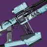 | 37 | D | 虚空 | 速射框架 | 16 | 王座世界掉落 | 52 | 槽化枪管 箭头制退器 | 加速线圈 | 充能时间 | 冲击支撑 | 失衡弹药 | 心灵骇入 | 唯一可用 Perk 组合是纯清怪用 没有失调协议 起源倒不错 | |
| 科里奥利斯之力 | 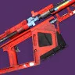 | 38 | D | 虚空 | 攻击型框架 | 29 | 木卫二 | 34 | 槽化枪管 箭头制退器 | 加速线圈 | 充能时间 | 金中藏弹 | 受控连射 | 御寒装备 | 糟糕框架上的受控连射 没有填装 Perk | |
| 斯诺里 FR5 | 39 | E | 虚空 | 精密框架 | 16 | 枪匠 | 38 | 槽化枪管 箭头制退器 | 加速线圈 | 充能时间 | 充盈 强制填装 | 狂乱 洪涝 | Omolon 流体动力 | 框架不错 但没有真正的填装 Perk 对洪涝也完全没相关 Perk 支持 | ||
| 空洞之语 | 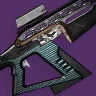 | 40 | E | 电弧 | 精密框架 | 26 | 仄 | 26 | 槽化枪管 箭头制退器 | 加速线圈 | 充能时间 | 金中藏弹 | 小试牛刀 狂暴 | 超因果流体 | 框架不错 但没有填装 Perk 或相关持续伤害 Perk | |
| 三生系统 | 41 | E | 烈日 | 适配框架 | 13 | 智谋 | 40 | 槽化枪管 箭头制退器 | 加速线圈 | 充能时间 | 自动填装枪套 | B 计划 爆破专家 | 边打边跑 | 没有真正的伤害 Perk 只有自填 | ||
| 时间轴极点 | 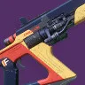 | 42 | E | 烈日 | 适配框架 | 10 | 仄 | 50 | 蜡烛 PS | 加速线圈 | 充能时间 | 自动填装枪套 | B 计划 爆破专家 | 无 | 没有真正的伤害 Perk 只有自填 | |
| 享乐主义 | 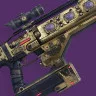 | 43 | E | 虚空 | 精密框架 | 17 | 二象性 | 39 | 槽化枪管 箭头制退器 | 加速线圈 | 充能时间 | 充盈 | B 计划 | 过量 | 除了是第二好的框架以外 其他全都糟糕 |
偃月
| 武器 | 图标 | 排名 | 评级 | 属性 | 框架 | 赛季 | 来源 | 勇士 | 弹药生成 | 护盾 | 枪管 | 弹匣 | 大师 | Perk 1 | Perk 2 | 起源特性 | 注解 |
|---|---|---|---|---|---|---|---|---|---|---|---|---|---|---|---|---|---|
| 黄道卷线杆 | 1 | S | 虚空 | 适配偃月 | 29 | 单人行动 | 41 | 47 | 辅助弹药储量 | 合金弹匣 切换弹匣 | 护盾持续时间 | 冲击支撑 瓦解破裂 不动如山 | 混沌重塑 紧逼近战 枯萎凝视 | 先锋决心 | 起源在一般用途上比苍鹭好 有混沌重塑 不知为何还有枯萎凝视 | ||
| 苍鹭 | 2 | S | 虚空 | 攻击型偃月 | 28 | 忠诚纪念碑 | 52 | 39 | 辅助弹药储量 | 合金弹匣 切换弹匣 | 护盾持续时间 | 冲击支撑 瓦解破裂 丰盈满溢 | 转向 紧逼近战 不屈 | 锤子敲钉 | 与神器模块压制偃月协同优秀 可在格挡减伤上再叠虚空覆盖护盾 还有近战 Perk 组合 | ||
| 偏异将临 | 3 | S | 虚空 | 速射偃月 | 24 | 救赎的边缘 | 65 | 28 | 辅助弹药储量 | 合金弹匣 切换弹匣 | 护盾持续时间 | 冲击支撑 瓦解破裂 重建 | 混沌重塑 紧逼近战 失衡弹药 | 集体使命 | 比前两名偃月差的唯二原因是框架和起源 | ||
| 拒绝召唤 | 4 | S | 缚丝 | 适配偃月 | 29 | 异端深渊 | 44 | 44 | 辅助弹药储量 | 合金弹匣 切换弹匣 | 护盾持续时间 | 切割 紧逼近战 连锁反应 | 混沌重塑 补足神盾 | 异端行径 | 可能是最佳动能位防守用偃月 切割+混沌重塑很强 还有两个起源可分别用于游走/ | ||
| 倾斜角度 | 5 | S | 冰影 | 攻击型偃月 | 29 | 萨瓦拉 | 31 | 42 | 辅助弹药储量 | 合金弹匣 切换弹匣 | 护盾持续时间 | 丰盈满溢 金中藏弹 霜华窃取者 | 冰冷弹匣 紧逼近战 | 问题解决者 | 冰冷弹匣能当个伤害 Perk 用 手感不错 起源对以上目标也有用 | ||
| 鲁布瑞之厄 | 6 | A | 烈日 | 适配偃月 | 16 | 门徒誓约 | 40 | 40 | 辅助弹药储量 | 合金弹匣 切换弹匣 | 护盾持续时间 | 紧逼近战 狂乱 不动如山 | 混沌重塑 腹背受敌 不屈 | 灵魂饮者 | 缺少一些防守功能性 灵魂饮者和偃月近战没有联动 因此覆盖率低 | ||
| 奈扎雷克的耳语 | 7 | A | 电弧 | 适配偃月 | 17 | 前兆 | 50 | 42 | 辅助弹药储量 | 合金弹匣 切换弹匣 | 护盾持续时间 | 爆破专家 金中藏弹 脉冲增幅器 | 狂乱 适配弹药 | 外向活泼 | Perk 池非常过时 但外向活泼还不错 作为防御工具仍能发挥作用 | ||
| 克尔格拉斯的审判 | 8 | A | 烈日 | 攻击型偃月 | 19 | 炽天使之盾 | 35 | 25 | 辅助弹药储量 | 合金弹匣 切换弹匣 | 护盾持续时间 | 丰盈满溢 爆破专家 拳击手 | 紧逼近战 腹背受敌 泉源 | 伏击 | 爆破专家/拳击手 + 泉源 是游戏里最高的技能瞬回来源之一 | ||
| 谜团 | 9 | A | 虚空 | 适配偃月 | 16 | 飞地 | 45 | 45 | 辅助弹药储量 | 合金弹匣 切换弹匣 | 护盾持续时间 | 盗墓者 金中藏弹 | 紧逼近战 不屈 | 心灵骇入 | 尽管 Perk 池过时仍可用 心灵骇入放在防御工具上很优秀 | ||
| 滑溜运气 | 10 | A | 烈日 | 速射偃月 | 29 | 深渊机灵 | 64 | 18 | 辅助弹药储量 | 合金弹匣 切换弹匣 | 护盾持续时间 | 混沌重塑 重建 治疗弹匣 | 紧逼近战 连锁反应 辉耀炽热 | 恢复仪式 | 为了拿到鲁布瑞之厄相同的 Perk 组合牺牲了太多护盾持续时间 | ||
| 滑溜运气 玖的仪式版本 | 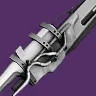 | 11 | A | 烈日 | 速射偃月 | 26 | 64 | 18 | 辅助弹药储量 | 合金弹匣 切换弹匣 | 护盾持续时间 | 重建 金中藏弹 治疗弹匣 | 紧逼近战 转向 辉耀炽热 | 重力井 | 在野车中可以用重力井捡弹药 有些功能性 其他方面被压过 | ||
| 反照率翼 | 12 | B | 电弧 | 攻击型偃月 | 29 | 忠诚纪念碑 | 35 | 30 | 辅助弹药储量 | 合金弹匣 切换弹匣 | 护盾持续时间 | 盗墓者 战略家 空中扳机 | 紧逼近战 爆破专家 金中藏弹 | 曙光惊喜 | 技能瞬回方面比克尔格拉斯的审判差 其他 Perk 也不太好 | ||
| 逆锋月刃 | 13 | B | 电弧 | 速射偃月 | 29 | 智谋 | 65 | 27 | 辅助弹药储量 | 合金弹匣 切换弹匣 | 护盾持续时间 | 不动如山 金中藏弹 脉冲增幅器 | 紧逼近战 腹背受敌 不屈 | 边打边跑 | 整体非常一般 最差框架 也没有特殊 Perk 或起源 | ||
| 意外复苏 | 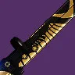 | 14 | B | 电弧 | 适配偃月 | 21 | 试炼 | 51 | 50 | 辅助弹药储量 | 合金弹匣 切换弹匣 | 护盾持续时间 | 自动填装枪套 脉冲增幅器 | 紧逼近战 狂乱 腹背受敌 | 欣然之速 | 自填在偃月上很少见 但除了高护盾持续时间外没别的亮点 |
霰弹枪
| 武器 | 图标 | 排名 | 评级 | 属性 | 框架 | 赛季 | 来源 | 勇士 | 弹药生成 | 枪管 | 弹匣 | 大师 | Perk 1 | Perk 2 | 起源特性 | 注解 |
|---|---|---|---|---|---|---|---|---|---|---|---|---|---|---|---|---|
| 威胁等级 | 1 | S | 动能 | 速射框架 | 29 | 众神殿 | 52 | 枪管套筒 | 战术弹匣 | 操控性 填装 | 级联点 雪上加霜 金中藏弹 | 全明星 战嚎炮管 混沌重塑 | 椭圆轨道 | 史上最强双伤害霰弹枪 动能合成联动 Perk 池巨星云集 | ||
| 裁决定论 | 2 | S | 电弧 | 攻击型框架 | 26 | 玻璃拱顶 | 34 | 枪管套筒 | 突击弹匣 | 操控性 填装 | 聚合充能 失调协议 回转弹药 | 战嚎炮管 雪上加霜 换挡 | 失时弹匣 | 游走内容里单发伤害恐怖 战嚎炮管 DPS 也很强 以攻击型框架来说说起源优秀 | ||
| 完美悖论 | 3 | S | 动能 | 速射框架 | 29 | 世界掉落 枪匠 | 54 | 枪管套筒 | 战术弹匣 | 操控性 填装 | 拳击手 阻止力 威胁探测 | 雪上加霜 战嚎炮管 全明星 | 光照无影 | 综合手感使用体验最好的 雪上加霜霰弹枪 | ||
| 遗产 | 4 | S | 动能 | 精确重击框架 | 12 | 深岩墓室 | 49 | 槽化枪管 | 突击弹匣 | 操控性 填装 | 转向 重建 | 级联点 聚合充能 重组 | 布瑞遗产 | 可能是所有传说特殊武器里单弹匣爆发最高的武器 | ||
| 固定低音 | 5 | S | 虚空 | 速射框架 | 29 | 内欧姆那 | 50 | 枪管套筒 | 战术弹匣 | 操控性 填装 | 盗墓者 爆破专家 失调协议 | 雪上加霜 战嚎炮管 | 纳米技术追踪导弹 | 最佳能量位雪上加霜 起源白送伤害 | ||
| 无声 | 6 | A | 虚空 | 精确重击框架 | 29 | 分离教义 | 46 | 槽化枪管 | 突击弹匣 | 操控性 填装 | 转向 事不过四 | 诱导推销 斩首武器 | 征服 | 在用转向上不如遗产 但能量位目前仍没有替代品 | ||
| 邪冬的谎言 | 7 | A | 烈日 | 射击套件 | 29 | 铁旗 | 34 | 枪管套筒 | 突击弹匣 | 操控性 填装 | 级联点 平顺拔枪 | 诱导推销 战嚎炮管 雪上加霜 | 藏匿之狼 | 可能用于寄生虫轮切 DPS 唯一级联点+伤害 Perk 的攻击型框架霰弹枪 | ||
| IKELOS_SG_v1.0.3 | 8 | A | 烈日 | 速射框架 | 19 | 炽天使之盾 | 60 | 枪管套筒 | 战术弹匣 | 操控性 填装 | 盗墓者 | 雪上加霜 战嚎炮管 腹背受敌 | 拉斯普廷军械库 | 俗称恶化喷 基本是固定低音 +腹背受敌 但起源更差 | ||
| 弑神者 | 9 | A | 电弧 | 速射框架 | 29 | 涅索斯 | 51 | 枪管套筒 | 战术弹匣 | 操控性 填装 | 失调协议 自动填装枪套 金中藏弹 | 雪上加霜 战嚎炮管 级联点 | 致命失误 | 没有盗墓者 但致命失误能补偿这点 其他增加使用体验的 Perk 也不错 | ||
| 一小步 | 10 | A | 冰影 | 速射框架 | 29 | 月球 | 53 | 枪管套筒 | 战术弹匣 | 操控性 填装 | 盗墓者 金中藏弹 | 雪上加霜 战嚎炮管 | 减员激励 | 完美悖论替代品 但没有光照无影也没有比较标准的霰弹枪 Perk | ||
| 猝死 玖的仪式版本 | 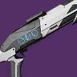 | 11 | A | 虚空 | 攻击型框架 | 26 | 38 | 枪管套筒 | 突击弹匣 | 操控性 填装 | 雪上加霜 失调协议 | 战嚎炮管 转向 | 重力井 | 雪上加霜+战嚎炮管攻击型框架仍算新颖 还有转向和实用的起源 | ||
| 猝死 | 12 | A | 虚空 | 攻击型框架 | 29 | 预言 | 38 | 枪管套筒 | 突击弹匣 | 操控性 填装 | 雪上加霜 失调协议 重建 | 战嚎炮管 | 混合弹匣 | 没有转向和重力井 但核心 Perk 组合还在 | ||
| 帝国法令 | 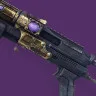 | 13 | A | 动能 | 攻击型框架 | 20 | 仄 | 39 | 枪管套筒 | 突击弹匣 | 操控性 填装 | 自动填装枪套 | 战嚎炮管 腹背受敌 | 过量 | 因为有自填所以使用体验好 加上有战嚎炮管/腹背受敌 | |
| 纯粹回忆 | 14 | A | 虚空 | 重型点射 | 27 | 忠诚纪念碑 沙克斯 | 40 | 槽化枪管 | 附加弹匣 弹跳型弹药 | 操控性 填装 | 嫉妒军械库 高强度型弹药储备 | 诱导推销 枯萎凝视 | 战斗咆哮 | 最适合快速送死的霰弹枪 也是所有枯萎凝视的选项中的最佳解（框架最佳） | ||
| 奥术之拥 | 15 | A | 电弧 | 重型点射 | 27 | 忠诚纪念碑 | 42 | 槽化枪管 | 附加弹匣 | 操控性 填装 | 事不过四 重建 盗墓者 | 聚合充能 腹背受敌 | 搜索队 | 理论上是最佳持续 DPS 选择 可惜有动能合成这座大山压着 | ||
| 直至回归 | 16 | A | 缚丝 | 速射框架 | 21 | 仄 | 54 | 枪管套筒 | 战术弹匣 | 操控性 填装 | 自动填装枪套 丰盈满溢 | 腹背受敌 级联点 战嚎炮管 | 未足之饥 | 自填/丰盈满溢+爆发 Perk 起源无用 而且可惜没有双伤害 Perk | ||
| 星界虚无 | 17 | B | 烈日 | 轻质框架 | 27 | 史诗永恒沙漠 | 29 | 枪管套筒 | 突击弹匣 | 操控性 填装 | 回转弹药 重建 嫉妒军械库 | 雪上加霜 聚合充能 战嚎炮管 | 参考框架 | 用来轮切 DPS 的轻质 可惜不是最适合该用途的框架 | ||
| 断剑者 | 18 | B | 缚丝 | 轻质框架 | 22 | 克洛塔的末日 | 25 | 枪管套筒 | 突击弹匣 | 操控性 填装 | 切割 爆破专家 | 雪上加霜 腹背受敌 混沌重塑 | 诅咒怨魂 | 不错的框架 切割这个 Perk 很有意思 可惜很难找到用途 | ||
| 异蚀 IV | 19 | B | 电弧 | 轻质框架 | 29 | 萨瓦拉 | 23 | 枪管套筒 | 突击弹匣 | 操控性 填装 | 盗墓者 金中藏弹 | 雪上加霜 战嚎炮管 腹背受敌 | 先锋决心 | 现在可强化 基本上是恶化喷的下位替代 低子弹量 | ||
| 最后生存者 | 20 | B | 烈日 | 攻击型框架 | 29 | 智谋 | 33 | 枪管套筒 | 突击弹匣 | 操控性 填装 | 盗墓者 金中藏弹 | 雪上加霜 战嚎炮管 失调协议 | 边打边跑 | 雪上加霜不适合这个框架 如果战嚎炮管和失调协议在 3 号位会好很多 | ||
| 碎晶石 | 21 | B | 冰影 | 精密框架 | 29 | 破碎王座 | 45 | 枪管套筒 | 突击弹匣 | 操控性 填装 | 雪上加霜 金中藏弹 | 战嚎炮管 | 劣迹斑斑 | 框架更差的猝死 不过还不算最差 | ||
| 米达宏工具 | 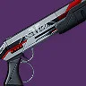 | 22 | B | 电弧 | 米达加成 | 27 | 忠诚纪念碑 沙克斯 | 44 | 枪管套筒 | 突击弹匣 | 操控性 填装 | 盗墓者 失调协议 | 雪上加霜 战嚎炮管 | 战斗咆哮 | 中庸的框架上有盗墓者+雪上加霜/战嚎炮管 | |
| 玫瑰罗盘 | 23 | B | 烈日 | 精密框架 | 29 | 忠诚纪念碑 | 45 | 枪管套筒 | 突击弹匣 | 操控性 填装 | 盗墓者 | 雪上加霜 战嚎炮管 | 梦想差事 | 与米达宏工具差不多 只是没有失调协议 起源更好 | ||
| 星芒视界 | 24 | B | 动能 | 攻击型框架 | 28 | 试炼 | 40 | 枪管套筒 | 突击弹匣 | 操控性 填装 | 金中藏弹 阻止力 | 全明星 雪上加霜 斩首武器 | 万能卡牌 | 理论上最优秀的动能位寄生虫轮切 DPS 枪 但除此之外不太吸引人 | ||
| 龙䲢 | 25 | B | 冰影 | 速射重弹 | 27 | 忠诚纪念碑 | 50 | 槽化枪管 | 突击弹匣 | 操控性 填装 | 金中藏弹 快速命中 | 冰冷弹匣 精准工具 | 坚韧 | 最佳的冰冷弹匣霰弹枪 但本身框架已能晕过载 因此整体用途有限 | ||
| 冈诺拉之斧 | 26 | B | 烈日 | 精确重击框架 | 29 | 铁旗 | 42 | 槽化枪管 | 加大弹匣 弹跳型弹药 | 操控性 填装 | 威胁探测 治疗弹匣 | 级联点 精准工具 辉耀炽热 | Suros 协同 | 用于送死时比纯粹回忆更精准 但定位明显更偏门 | ||
| 末日先知 | 27 | B | 电弧 | 精密框架 | 25 | 救赎花园 | 48 | 枪管套筒 | 突击弹匣 | 操控性 填装 | 重建 嫉妒军械库 | 雪上加霜 换挡 震颤反馈 | 光抑制 | 没有盗墓者 但 Perk 多样性还行 震颤反馈可单发触发震颤 | ||
| 第七炽天使 CQC-12 | 28 | C | 烈日 | 轻质框架 | 29 | 发射基地 | 27 | 枪管套筒 | 突击弹匣 | 操控性 填装 | 失调协议 | 连锁反应 腹背受敌 战嚎炮管 | 注意了 | 纯讨论用失调协议的霰弹枪的话是最佳搭配 | ||
| 死亡秘法 IV | 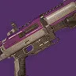 | 29 | C | 电弧 | 轻质框架 | 29 | 枪匠 | 19 | 枪管套筒 | 突击弹匣 | 操控性 填装 | 失调协议 平顺拔枪 | 连锁反应 腹背受敌 斩首武器 | 万能卡牌 | 类似第七炽天使 CQC-12 但没有战嚎炮管而是换成万能卡牌 | |
| 固定负载 | 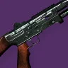 | 30 | C | 电弧 | 速射框架 | 17 | 智谋 | 49 | 枪管套筒 | 战术弹匣 | 操控性 填装 | 盗墓者 自动填装枪套 金中藏弹 | 腹背受敌 战嚎炮管 雪上加霜 | 战场检验 | 因无法强化 Perk 而受限 但 Perk 池其实相当不错 | |
| 巨蟒 | 31 | C | 虚空 | 攻击型框架 | 29 | 智谋 | 37 | 枪管套筒 | 突击弹匣 | 操控性 填装 | 丰盈满溢 | 战嚎炮管 雪上加霜 枯萎凝视 | 边打边跑 | 好用的战嚎炮管框架 但 3 号位偏弱 不知为何还有枯萎凝视 | ||
| 有朝一日 | 32 | C | 动能 | 精密框架 | 24 | 苍白之心 | 37 | 枪管套筒 | 突击弹匣 | 操控性 填装 | 雪上加霜 金中藏弹 | 重组 斩首武器 | 庄家之选 | 雪上加霜+重组前所未见 可惜用途不大 | ||
| 斗牛士 64 | 33 | C | 电弧 | 精密框架 | 29 | 贪婪之握 | 45 | 枪管套筒 | 突击弹匣 | 操控性 填装 | 金中藏弹 超充弹匣 | 雪上加霜 换挡 | 宝藏现世 | 3 号位一般+雪上加霜放在一个差的框架上 | ||
| 冷面专递 | 34 | C | 电弧 | 攻击型框架 | 22 | 萨瓦拉 | 28 | 枪管套筒 | 突击弹匣 | 操控性 填装 | 失调协议 丰盈满溢 平顺拔枪 | 雪上加霜 战嚎炮管 | 先锋平反 | 不可强化 但总体是 Perk 标准的攻击型框架 | ||
| 旅居者的故事 | 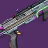 | 35 | C | 烈日 | 精确重击框架 | 25 | 仄 永恒挑战 | 43 | 槽化枪管 | 突击弹匣 | 操控性 填装 | 自动填装枪套 失调协议 | 精准工具 辉耀炽热 和谐 | 熔岩激涌 | 唯一失调协议独头霰弹 除此之外完全不突出 | |
| 崩崖 | 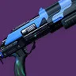 | 36 | C | 虚空 | 精密框架 | 27 | 开普勒 | 45 | 枪管套筒 | 突击弹匣 | 操控性 填装 | 雪上加霜 重建 | 斩首武器 失调协议 | 详尽研究 | 雪上加霜+斩首武器有点新颖 但其他 Perk 位都没啥用 所以吸引力低 | |
| 鲁莽致险 | 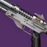 | 37 | C | 动能 | 轻质框架 | 29 | 单人行动 | 26 | 枪管套筒 | 突击弹匣 | 操控性 填装 | 盗墓者 | 战嚎炮管 全明星 | 先锋决心 | 不适合战嚎炮管连打的框架 盗墓者不错 但没有雪上加霜 | |
| 霍桑的战铸霰弹枪 | 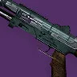 | 38 | C | 冰影 | 轻质框架 | 28 | 忠诚纪念碑 枪匠 | 10 | 枪管套筒 | 突击弹匣 | 操控性 填装 | 金中藏弹 盗墓者 | 冰冷弹匣 | 战场检验 | 因射程限制不如龙䲢 弹匣数也更低 | |
| 拾荒者的命运 | 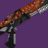 | 39 | C | 虚空 | 精密框架 | 25 | 仄 凯尔之陨? | 42 | 枪管套筒 | 突击弹匣 | 操控性 填装 | 失调协议 | 斩首武器 腹背受敌 失衡弹药 | 黑暗乙太收割者 | 配合起源是不错的失调协议游走选择 但没有其他用途 | |
| 渎神者 | 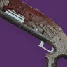 | 40 | C | 动能 | 精确重击框架 | 29 | 月球 | 48 | 槽化枪管 | 突击弹匣 | 操控性 填装 | 事不过四 | 全明星 | 减员激励 | 配动能合成相当不错 可惜框架差 | |
| 极强音-11 | 41 | D | 动能 | 精确重击框架 | 29 | 萨瓦拉 | 45 | 槽化枪管 | 突击弹匣 | 操控性 填装 | 事不过四 | 斩首武器 聚焦狂怒 腹背受敌 | 先锋决心 | 事不过四 +不错的伤害 Perk | ||
| 内萨的奉献 | 42 | D | 虚空 | 精确重击框架 | 20 | 梦魇根源 | 49 | 槽化枪管 | 突击弹匣 | 操控性 填装 | 事不过四 | 斩首武器 聚焦狂怒 | 和谐回声 | 与极强音-11 相同 只是没有腹背受敌 | ||
| 超星系团 | 43 | D | 缚丝 | 精确重击框架 | 23 | 苦命鸳鸯 | 46 | 槽化枪管 | 突击弹匣 | 操控性 填装 | 事不过四 切割 金中藏弹 | 级联点 斩首武器 腹背受敌 | 龙之复仇 | 与内萨的奉献相同 只是没有聚焦狂怒 | ||
| 义无反顾 | 44 | D | 烈日 | 轻质框架 | 17 | 前兆 | 22 | 枪管套筒 | 突击弹匣 | 操控性 填装 | 威胁探测 | 雪上加霜 斩首武器 | 外向活泼 | 手感和使用体验都是上乘的雪上加霜霰弹 但已经过时 | ||
| 朝花夕拾 | 45 | D | 虚空 | 精密框架 | 29 | 幽梦之城 | 38 | 枪管套筒 | 突击弹匣 | 操控性 填装 | 光速拔枪 | 雪上加霜 枯萎凝视 | 高级反射 | 框架差 3 号位糟糕 但有枯萎凝视 | ||
| 荒原 M5 | 46 | D | 动能 | 轻质框架 | 15 | 永恒挑战 | 26 | 枪管套筒 | 突击弹匣 | 操控性 填装 | 拳击手 金中藏弹 | 雪上加霜 战嚎炮管 | 热切换 | 很过时的轻质雪上加霜选择 没有填装辅助 Perk | ||
| 怀旧未来主义者 | 47 | D | 虚空 | 轻质框架 | 29 | 熔炉竞技场 | 20 | 枪管套筒 | 突击弹匣 | 操控性 填装 | 自动填装枪套 | 战嚎炮管 斩首武器 高地 | 战斗咆哮 | 不适合战嚎炮管 4 号位尚可 Perk 可用自填 | ||
| 拉格茜尔-D | 48 | D | 动能 | 攻击型框架 | 16 | 枪匠 | 37 | 枪管套筒 | 突击弹匣 | 操控性 填装 | 自动填装枪套 | 雪上加霜 | Häkke 突入武装 | 最早的动能雪上加霜选择 可惜虽然有自填 却是攻击型框架 | ||
| 携手 | 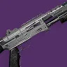 | 49 | D | 电弧 | 攻击型框架 | 20 | 枪匠 | 32 | 枪管套筒 | 突击弹匣 | 操控性 填装 | 滑行射击 | 战嚎炮管 雪上加霜 级联点 | 战场检验 | 没有好回填 Perk 4 号位 Perk 池很标准 | |
| 喜剧演员 | 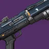 | 50 | D | 虚空 | 攻击型框架 | 15 | 萨瓦拉 | 40 | 枪管套筒 | 突击弹匣 | 操控性 填装 | 金中藏弹 | 战嚎炮管 斩首武器 | 眩晕恢复 | 与携手相同 只是用金中藏弹 替代级联点 起源可能更差 | |
| 心灵操纵者的野心 | 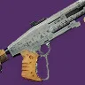 | 51 | D | 烈日 | 攻击型框架 | 29 | 萨瓦拉 | 40 | 枪管套筒 | 突击弹匣 | 操控性 填装 | 威胁探测 | 雪上加霜 斩首武器 | 问题解决者 | 攻击型框架但没有战嚎炮管或填装 Perk 起源倒不差 | |
| 僵局 | 52 | D | 冰影 | 精密框架 | 29 | 熔炉竞技场 | 48 | 枪管套筒 | 突击弹匣 | 操控性 填装 | 光速拔枪 | 雪上加霜 斩首武器 | 无 | 类似朝花夕拾 但没有枯萎凝视和起源特性 | ||
| 无赦 | 53 | E | 冰影 | 精确重击框架 | 18 | 仄 | 41 | 槽化枪管 | 突击弹匣 | 操控性 填装 | 精准连击 | 聚焦狂怒 腹背受敌 | 右勾拳 | 没有填装 Perk 但精准连击 + 聚焦狂怒不差 | ||
| 连奏-11 | 54 | E | 烈日 | 精确重击框架 | 25 | 枪匠 | 38 | 槽化枪管 | 突击弹匣 | 操控性 填装 | 自动填装枪套 | 聚焦狂怒 级联点 斩首武器 | Suros 协同 | 没有产弹 Perk 4 号位 Perk 分布还不错 | ||
| 早来晚走 | 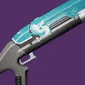 | 55 | E | 电弧 | 精确重击框架 | 11 | 仄 | 40 | 槽化枪管 | 突击弹匣 | 操控性 填装 | 自动填装枪套 | 斩首武器 腹背受敌 | 无 | 类似连奏-11 但没有聚焦狂怒 | |
| 刺骨者 | 56 | E | 虚空 | 精确重击框架 | 29 | 木卫二 | 40 | 槽化枪管 | 突击弹匣 | 操控性 填装 | 精准连击 自动填装枪套 金中藏弹 | 精准工具 | 御寒装备 | 3 号位比其他 E 梯队独头霰弹更好 但伤害 Perk 分布糟糕 | ||
| 审判官 | 57 | E | 电弧 | 精确重击框架 | 29 | 试炼 | 52 | 槽化枪管 | 突击弹匣 | 操控性 填装 | 盗墓者 | 级联点 斩首武器 | 战斗咆哮 | 独头霰弹上有级联点 除此很一般 | ||
| 里斯行者 | 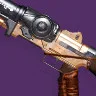 | 58 | E | 动能 | 轻质框架 | 29 | 铁旗 | 25 | 枪管套筒 | 突击弹匣 | 操控性 填装 | 失调协议 平顺拔枪 | 斩首武器 | 藏匿之狼 | 用于霰弹枪双切 框架和 Perk 分布都很过时 | |
| 沐雨栉风 | 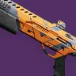 | 59 | F | 动能 | 攻击型框架 | 4 | 永恒挑战 | 40 | 枪管套筒 | 突击弹匣 | 操控性 填装 | 自动填装枪套 | 全自动击发系统 | 无 | 完全没有伤害 Perk | |
| 愿望使者 | 60 | F | 烈日 | 速射框架 | 5 | 沙克斯 永恒挑战 | 64 | 枪管套筒 | 战术弹匣 | 操控性 填装 | 盗墓者 | 自动填装枪套 | 无 | 甚至没有全自动开火率提升 |
狙击枪
| 武器 | 图标 | 排名 | 评级 | 属性 | 框架 | 赛季 | 来源 | 勇士 | 弹药生成 | 枪管 | 弹匣 | 大师 | Perk 1 | Perk 2 | 起源特性 | 注解 |
|---|---|---|---|---|---|---|---|---|---|---|---|---|---|---|---|---|
| 阴谋淬砺 | 1 | S | 冰影 | 动态热量武器 | 28 | 平衡 | 43 | 槽化枪管 | 电离散热器 超频散热器 | 冷却效率 | 斩首武器 | 诱导推销 火线 | 帝国效忠 | 数值膨胀的代表 非常夸张 带双伤害 Perk | ||
| 巴拉巴拉 | 2 | S | 动能 | 攻击型框架 | 28 | 忠诚纪念碑 萨瓦拉 | 37 | 槽化枪管 | 战术弹匣 | 操控性 | 精准连击 失调协议 | 元素磨砺 全明星 转向 | 有加速突击后伤害超过普莱蒂斯的复仇 还能用继承同款 Perk 组合 | |||
| 普莱蒂斯的复仇 | 3 | S | 动能 | 速射框架 | 26 | 玻璃拱顶 | 60 | 槽化枪管 | 战术弹匣 | 操控性 | 事不过四 动能震颤 失调协议 | 元素磨砺 全明星 精准工具 | 失时弹匣 | 综合表现优秀的速射配置 游走也不错 | ||
| 舵手 | 4 | S | 电弧 | 高冲击力框架 | 29 | 熔炉竞技场 | 43 | 槽化枪管 | 战术弹匣 | 操控性 | 失调协议 光能之触 速射瞄准 | 元素磨砺 换挡 斩首武器 | 加速突击 | 在游走内容上能提供的总伤很高 基本上完全挤占了彼岸新域在游走内容的生态位 | ||
| 转瞬长矛 | 5 | A | 缚丝 | 速射框架 | 27 | 永恒沙漠 | 54 | 槽化枪管 | 战术弹匣 | 操控性 | 事不过四 金中藏弹 | 元素磨砺 诱导推销 转向 | 参考框架 | 单看不错 但几乎所有场景都被普莱蒂斯的复仇压过 | ||
| 全知之眼 | 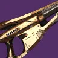 | 6 | A | 烈日 | 速射框架 | 25 | 救赎花园 | 44 | 槽化枪管 | 战术弹匣 | 操控性 | 事不过四 金中藏弹 | 元素磨砺 精准工具 | 光抑制 | 基本是烈日版快速增长 可配合神器猎人日志 | |
| 快速增长 | 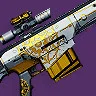 | 7 | A | 电弧 | 速射框架 | 29 | 忠诚纪念碑 | 45 | 槽化枪管 | 战术弹匣 | 操控性 | 事不过四 | 聚合充能 换挡 | 梦想差事 | 能量位优秀的选择 但基本只用于匹配激涌 | |
| 崇拜 | 8 | A | 电弧 | 适配框架 | 29 | 巅峰行动 | 36 | 槽化枪管 | 战术弹匣 | 操控性 | 事不过四 | 元素磨砺 | 加速突击 | 基本就是能量位的巴拉巴拉（有加速突击后伤害超过快速增长） | ||
| 父之罪孽 | 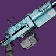 | 9 | A | 虚空 | 速射框架 | 16 | 王座世界掉落 | 48 | 槽化枪管 | 战术弹匣 | 操控性 | 精准连击 金中藏弹 边打边劫 | 诱导推销 枯萎凝视 聚焦狂怒 | 心灵骇入 | 得益于起源能附加疲惫 和 边打边劫 是功能性最高的枯萎凝视狙击 也有金中藏弹 | |
| 临界异常 | 10 | A | 冰影 | 攻击型框架 | 24 | 救赎的边缘 | 47 | 槽化枪管 | 战术弹匣 | 操控性 | 冰冷弹匣 狂暴 | 混沌重塑 超级杀戮弹匣 | 集体使命 | 基本只靠冰冷弹匣才保持在这个梯队 而当前主流使用场景更少了 | ||
| 变节者 | 11 | A | 电弧 | 速射框架 | 29 | 月球 | 51 | 槽化枪管 | 战术弹匣 | 操控性 | 边打边劫 精准连击 金中藏弹 | 高爆载荷 换挡 | 减员激励 | 唯一有边打边劫+高爆的能量位速射狙 在高难挑战内容有奇效 其他 Perk 尚可 | ||
| 继承 | 12 | A | 动能 | 攻击型框架 | 12 | 深岩墓室 | 50 | 槽化枪管 | 战术弹匣 | 操控性 | 失调协议 重建 | 转向 元素磨砺 重组 | 布瑞遗产 | 因和转向的配合而出名的失调协议狙击 其他方面一般 | ||
| 最后劫掠 | 13 | A | 烈日 | 攻击型框架 | 29 | 欧洲无人区 | 29 | 槽化枪管 | 战术弹匣 | 操控性 | 回转弹药 失调协议 | 诱导推销 辉耀炽热 级联点 | 老兵睿智 | 得益于燃烧步枪弹药神器模组和老兵睿智 可竞争最佳清怪狙击 | ||
| 继承 猛攻版本 | 14 | A | 动能 | 攻击型框架 | 29 | 猛攻 | 50 | 槽化枪管 | 战术弹匣 | 操控性 | 动能震颤 和谐 爆破专家 | 重组 聚合充能 超级杀戮弹匣 | 不屈不挠 | 动能震颤/和谐+重组带来很高的游走爆发 可惜没有转向 | ||
| 多多罗的凝视 | 15 | B | 电弧 | 攻击型框架 | 29 | 竞技场行动 | 45 | 槽化枪管 | 战术弹匣 | 操控性 | 失调协议 回转弹药 | 转向 元素磨砺 超级杀戮弹匣 | 煅炉眷属 | 继承同款 Perk 组合 但神器协同更少 | ||
| 反复记号 | 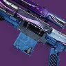 | 16 | B | 缚丝 | 攻击型框架 | 20 | 内欧姆那 | 28 | 槽化枪管 | 战术弹匣 | 操控性 | 边打边劫 精准连击 幸运的一击 | 高爆载荷 级联点 超级杀戮弹匣 | 纳米技术追踪导弹 | 唯一有边打边劫+高爆的动能绿弹武器 其他 Perk 还行 | |
| 霸权 | 17 | B | 动能 | 速射框架 | 21 | 最后一愿 | 42 | 槽化枪管 | 附加弹匣 | 操控性 | 金中藏弹 失调协议 | 动能震颤 | 爆炸协议 | 金中藏弹+动能震颤 适合游走内容 但现在明显被其他动能游走狙击压过 | ||
| 战利品猎人 | 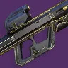 | 18 | B | 虚空 | 攻击型框架 | 29 | 涅索斯 | 39 | 槽化枪管 | 战术弹匣 | 操控性 | 精准连击 自动填装枪套 金中藏弹 | 聚合充能 诱导推销 枯萎凝视 | 致命失误 | 不错的补伤害狙击 起源不错 有枯萎凝视 但明显不如动能位主流选择 | |
| 拥抱身份 | 19 | B | 虚空 | 适配框架 | 24 | 苍白之心 | 36 | 槽化枪管 | 附加弹匣 | 操控性 | 枯萎凝视 斩首武器 重建 | 转向 聚合充能 高地 | 庄家之选 | 单发伤害最高的枯萎凝视狙 也有双伤害 Perk | ||
| 孤独如神 | 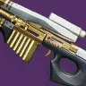 | 20 | B | 动能 | 速射框架 | 29 | 众神殿 | 45 | 槽化枪管 | 战术弹匣 | 操控性 | 回转弹药 | 全明星 聚合充能 超级杀戮弹匣 | 椭圆轨道 | 配动能合成效果不错 但仍不如 S 梯队选项 | |
| 纳伊姆的长矛 | 21 | B | 缚丝 | 速射框架 | 29 | 战争领主的废墟 | 55 | 槽化枪管 | 战术弹匣 | 操控性 | 幸运的一击 解构 回转弹药 | 级联点 元素磨砺 超级杀戮弹匣 | 分离 | 首个也是唯一的级联点速射狙 冷门场景还有解构+伤害 Perk | ||
| 千码凝视 | 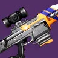 | 22 | C | 虚空 | 适配框架 | 29 | 贪婪之握 | 50 | 槽化枪管 | 附加弹匣 | 操控性 | 失调协议 斩首武器 | 转向 瓦解 | 宝藏现世 | 虚空狙上的继承 Perk 组合 可配合神器协同 但框架更差 | |
| 言语轨迹 | 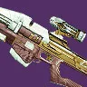 | 23 | C | 冰影 | 适配框架 | 22 | 仄 | 43 | 槽化枪管 | 附加弹匣 | 操控性 | 丰盈满溢 失调协议 | 高地 覆盖护盾克星 火线 | 热血上头 | 高难内容最优选反屏障选择 | |
| 月面岩屑 III | 24 | C | 烈日 | 攻击型框架 | 22 | 萨瓦拉 | 32 | 槽化枪管 | 战术弹匣 | 操控性 | 精准连击 边打边劫 | 高地 级联点 高爆载荷 | 万能卡牌 | 相比变节者射速更慢 边打边劫+高爆 其他 Perk 还行 | ||
| 宁静 | 25 | C | 动能 | 适配框架 | 29 | 月球 | 40 | 槽化枪管 | 附加弹匣 | 操控性 | 回转弹药 狂暴 | 转向 元素磨砺 全明星 | 减员激励 | 转向可能比亚斯明的抗争 的 Perk 更吸引人 狂暴也有冷门用途 | ||
| 亚斯明的抗争 | 26 | C | 动能 | 适配框架 | 18 | 国王的陨落 | 35 | 槽化枪管 | 战术弹匣 | 操控性 | 回转弹药 边打边劫 金中藏弹 | 全明星 聚合充能 | 火力满溢 | 3 号位 Perk 多样 可配动能合成倾泻子弹 | ||
| 伊鲁康吉 | 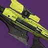 | 27 | C | 冰影 | 速射框架 | 20 | 枪匠 | 46 | 槽化枪管 | 战术弹匣 | 操控性 | 事不过四 边打边劫 | 聚焦狂怒 火线 墓碑 | Veist 尖刺 | 有边打边劫但没高爆 也有 Veist+尚可的事不过四组合 | |
| 炎阳灵眼 | 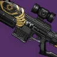 | 28 | C | 动能 | 适配框架 | 29 | 试炼 | 45 | 槽化枪管 | 附加弹匣 | 操控性 | 精准连击 | 聚合充能 动能震颤 | 万能卡牌 | 亚斯明的抗争的降级版 用途几乎相同 | |
| IKELOS_SR_v1.0.3 | 29 | C | 烈日 | 速射框架 | 19 | 炽天使之盾 | 45 | 槽化枪管 | 战术弹匣 | 操控性 | 事不过四 | 聚焦狂怒 | 拉斯普廷军械库 | 普通速射事不过四 +一般伤害 Perk | ||
| 艾伦 05 | 30 | C | 缚丝 | 适配框架 | 29 | 扭曲 | 41 | 槽化枪管 | 战术弹匣 | 操控性 | 事不过四 边打边劫 | 精准工具 火线 超级杀戮弹匣 | 腐臭弹药 | 尽管 Perk 更多样 但因框架仍不如 IKELOS_SR | ||
| 天钿 RR4 | 31 | C | 烈日 | 适配框架 | 29 | 萨瓦拉 | 50 | 槽化枪管 | 附加弹匣 | 操控性 | 事不过四 羸弱能量球 金中藏弹 | 精准工具 高爆载荷 解构 | 问题解决者 | 羸弱能量球+高爆 可能有点玩法 其他就是很普通的适配狙 | ||
| 维烈妲-F | 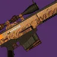 | 32 | C | 虚空 | 攻击型框架 | 25 | 枪匠 | 33 | 槽化枪管 | 战术弹匣 | 操控性 | 解构 平顺拔枪 | 枯萎凝视 聚焦狂怒 | Häkke 突入武装 | 有枯萎凝视的攻击型狙 3 号位有优化使用体验的 Perk 没特别之处 | |
| 主权 | 33 | C | 虚空 | 适配框架 | 25 | 仄 凯尔之陨? | 40 | 槽化枪管 | 附加弹匣 | 操控性 | 高爆载荷 失调协议 | 枯萎凝视 精准工具 铤而走险 | 黑暗乙太收割者 | 枯萎凝视单发伤害低于维烈妲-F 也有失调协议 | ||
| 赋格曲-55 | 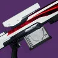 | 34 | C | 虚空 | 适配框架 | 16 | 枪匠 | 45 | 槽化枪管 | 附加弹匣 | 操控性 | 事不过四 金中藏弹 | 聚焦狂怒 火线 | Suros 协同 | 聚焦狂怒可能比艾伦 05 和天钿 RR4 更好 但其他没优势 | |
| 锐利之蓟 | 35 | D | 烈日 | 攻击型框架 | 29 | 试炼 | 45 | 槽化枪管 | 战术弹匣 | 操控性 | 嫉妒军械库 精准连击 金中藏弹 | 元素磨砺 诱导推销 事不过四 | Häkke 突入武装 | 不用事不过四的狙里最好的一档 有精准连击+事不过四的噱头组合 | ||
| 岸线异见者 | 36 | D | 虚空 | 速射框架 | 27 | 忠诚纪念碑 枪匠 | 55 | 槽化枪管 | 战术弹匣 | 操控性 | 精准连击 边打边劫 高爆载荷 | 高地 精准工具 | 布瑞遗产 | 精准连击+一般伤害 Perk 的速射 用 边打边劫来做区分 | ||
| 未竟之终 | 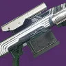 | 37 | D | 电弧 | 攻击型框架 | 29 | 铁旗 | 59 | 槽化枪管 | 附加弹匣 | 操控性 | 精准连击 回转弹药 | 聚合充能 元素磨砺 精准工具 | 藏匿之狼 | 伤害 Perk 更好 但框架更差 且相比岸线异见者没边打边劫 | |
| 远方吸引 | 38 | D | 冰影 | 速射框架 | 21 | 仄 | 39 | 槽化枪管 | 战术弹匣 | 操控性 | 精准连击 | 聚焦狂怒 | 未足之饥 | 类似岸线异见者但没边打边劫 伤害 Perk 更稳定 | ||
| 硅神经瘤 | 39 | D | 动能 | 攻击型框架 | 16 | 萨瓦拉 | 35 | 槽化枪管 | 战术弹匣 | 操控性 | 精准连击 | 聚焦狂怒 火线 | 眩晕恢复 | 框架比远方吸引差 | ||
| 阿尔布鲁纳-D | 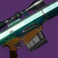 | 40 | D | 电弧 | 攻击型框架 | 19 | 智谋 | 45 | 槽化枪管 | 战术弹匣 | 操控性 | 精准连击 高爆载荷 | 级联点 火线 斩首武器 | Häkke 突入武装 | 类似硅神经瘤但没有聚焦狂怒 | |
| 加卢 RR3 | 41 | D | 电弧 | 适配框架 | 17 | 枪匠 | 35 | 槽化枪管 | 附加弹匣 | 操控性 | 丰盈满溢 边打边劫 | 聚焦狂怒 | Omolon 流体动力 | 相比较高位的 D 梯队狙击没有产弹药 Perk 而是有边打边劫 | ||
| 冰冻轨道 | 42 | D | 虚空 | 攻击型框架 | 29 | 熔炉竞技场 | 45 | 槽化枪管 | 战术弹匣 | 操控性 | 精准连击 金中藏弹 | 高地 级联点 | 战斗咆哮 | 精准连击+差劲的 4 号位 而且还是攻击狙 | ||
| 暮光誓言 | 43 | D | 烈日 | 速射框架 | 29 | 幽梦之城 | 45 | 槽化枪管 | 战术弹匣 | 操控性 | 幸运的一击 嫉妒刺客 | 诱导推销 精准工具 | 高级反射 | 没产弹药 Perk 但打空用 Perk 和伤害 Perk 都不错 | ||
| 机械死神 | 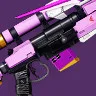 | 44 | D | 电弧 | 攻击型框架 | 29 | 忠诚纪念碑 | 45 | 槽化枪管 | 战术弹匣 | 操控性 | 精准连击 | 火线 斩首武器 | 搜索队 | 最后一把同时有产弹药+可用伤害 Perk 的狙击 | |
| 谈判专家 | 45 | E | 虚空 | 速射框架 | 22 | 萨瓦拉 | 42 | 槽化枪管 | 战术弹匣 | 操控性 | 失调协议 | 失衡弹药 高地 | 先锋平反 | 尚可的 Perk 可配失调协议 但定位非常单一 | ||
| 机智过头 | 46 | E | 电弧 | 适配框架 | 29 | 熔炉竞技场 | 50 | 槽化枪管 | 附加弹匣 | 操控性 | 嫉妒刺客 失调协议 | 诱导推销 斩首武器 | 无 | 无产弹药 + 不错伤害 Perk | ||
| 唯一幸存者 | 47 | E | 电弧 | 适配框架 | 29 | 智谋 | 41 | 槽化枪管 | 附加弹匣 | 操控性 | 嫉妒军械库 | 换挡 元素磨砺 超级杀戮弹匣 | 边打边跑 | 基本是机智过头多了一些更偏门伤害 Perk | ||
| 无念 | 48 | E | 冰影 | 适配框架 | 16 | 暗屋之声 | 48 | 槽化枪管 | 附加弹匣 | 操控性 | 丰盈满溢 | 火线 | 陆地坦克 | Perk 池很过时 也没有更新版聚焦狂怒 | ||
| 遥远古墓 | 49 | E | 烈日 | 速射框架 | 10 | 仄 | 47 | 槽化枪管 | 战术弹匣 | 操控性 | 小丑皇弹药筒 | 火线 | 无 | 框架更好的无念 过填 Perk 更差 | ||
| 漫漫长路 | 50 | E | 烈日 | 攻击型框架 | 15 | 41 | 槽化枪管 | 战术弹匣 | 操控性 | 丰盈满溢 小丑皇弹药筒 | 火线 | 无 | 有两个过填 Perk 但框架不如 E 梯队更高的狙击 | |||
| 狐啮 | 51 | E | 动能 | 攻击型框架 | 29 | 铁旗 | 38 | 槽化枪管 | 战术弹匣 | 操控性 | 嫉妒刺客 | 斩首武器 | 藏匿之狼 | 伤害 Perk 比更高 E 级狙击弱 | ||
| 牧羊人的注视 | 52 | E | 动能 | 适配框架 | 15 | 仄 永恒挑战 | 32 | 槽化枪管 | 附加弹匣 | 操控性 | 金中藏弹 | 火线 | 无 | 金中藏弹还行 但明显不如标准过填 Perk | ||
| 遥远未来 | 53 | E | 烈日 | 适配框架 | 13 | 仄 永恒挑战 | 30 | 槽化枪管 | 附加弹匣 | 操控性 | 自动填装枪套 金中藏弹 | 狂乱 爆破专家 | 无 | 自填在狙击上少见 但没有产弹药 Perk 4 号位也很弱 | ||
| 多米诺 | 54 | F | 烈日 | 适配框架 | 24 | 枪匠 | 38 | 槽化枪管 | 附加弹匣 | 操控性 | 边打边劫 丰盈满溢 | 辉耀炽热 | 绝路专注 | 基本唯一亮点是边打边劫 | ||
| 挚爱 | 55 | F | 烈日 | 适配框架 | 17 | 前兆 | 36 | 槽化枪管 | 附加弹匣 | 操控性 | 事不过四 | 狂暴 | 过量 | 有事不过四但没有真正的伤害 Perk | ||
| 寡妇蜇 | 56 | F | 烈日 | 速射框架 | 11 | 仄 | 33 | 槽化枪管 | 战术弹匣 | 操控性 | 金中藏弹 | 爆破专家 瓦解破裂 | 无 | 金中藏弹+没有任何有用东西 | ||
| 长影 | 57 | F | 动能 | 适配框架 | 4 | 永恒挑战 | 32 | ATC 雷克斯 | 附加弹匣 | 操控性 | 速射瞄准 | 精准连击 | 无 | 没用 |
火箭手枪
| 武器 | 图标 | 排名 | 评级 | 属性 | 框架 | 赛季 | 来源 | 勇士 | 弹药生成 | 枪管 | 弹匣 | 大师 | Perk 1 | Perk 2 | 起源特性 | 注解 |
|---|---|---|---|---|---|---|---|---|---|---|---|---|---|---|---|---|
| 食莲者 | 1 | S | 虚空 | 微型导弹框架 | 29 | 巅峰行动 | 42 | 高速发射 高爆弹药 | 合金弹匣 | 填装 | 冲击支撑 空中扳机 | 失衡弹药 腹背受敌 枯萎凝视 | 加速突击 | 与神器协同最佳 还有超大范围的边打边劫（已绝版） | ||
| 极高反射 | 2 | S | 动能 | 微型导弹框架 | 29 | 木卫二 | 47 | 高速发射 高爆弹药 | 战术弹匣 | 填装 | 迷惑爆发 金中藏弹 阻止力 | 动能震颤 全明星 辅助炸药 | 御寒装备 | 可以说是整款游戏里最适合新动能 Perk 的武器之一 还有 15% 动能伤害加成 | ||
| 重现记忆 | 3 | S | 烈日 | 微型导弹框架 | 27 | 忠诚纪念碑 沙克斯 | 40 | 高速发射 高爆弹药 | 战术弹匣 高爆弹药 合金弹匣 | 填装 | 治疗弹匣 即兴弹药 金中藏弹 | 转向 辉耀炽热 燃烧野心 | 坚韧 | 转向是有趣且强力的 Perk 起源优秀 治疗弹匣一直不错 | ||
| 蒙恩 | 4 | S | 电弧 | 微型导弹框架 | 29 | 战争领主的废墟 | 37 | 高速发射 高爆弹药 | 战术弹匣 | 填装 | 空中扳机 解构 危险区域 | 伏特子弹 连锁反应 羸弱能量球 | 分离 | 溅射+空中扳机产球快 清怪 Perk 也好 | ||
| 反常行动 | 5 | A | 烈日 | 微型导弹框架 | 24 | 周而复始 | 37 | 高速发射 高爆弹药 | 战术弹匣 | 填装 | 治疗弹匣 沙场备战 拳击手 | 辉耀炽热 黄金三角 | 活性放射体液转换器 | 几乎所有场景下都是重现记忆的绝对下位 | ||
| 提娜莎精通 | 6 | A | 冰影 | 微型导弹框架 | 29 | 铁旗 | 46 | 高速发射 高爆弹药 | 战术弹匣 | 填装 | 空中扳机 解构 脉冲增幅器 | 冰冷弹匣 腹背受敌 铤而走险 | 藏匿之狼 | 比解脱更实用的晕多勇士枪 但仍相当偏门 | ||
| 宣召呼唤 | 7 | A | 缚丝 | 微型导弹框架 | 24 | 苍白之心 | 25 | 高速发射 高爆弹药 | 战术弹匣 | 填装 | 切割 金中藏弹 爆破专家 | 混沌重塑 幼雏 黄金三角 | 庄家之选 | 庄家之选套装可选项 也有切割 + 混沌重塑 的优秀续航 但弹药生成很差 | ||
| 事故 | 8 | A | 电弧 | 长相聚 | 27 | 忠诚纪念碑 萨瓦拉 | 37 | 高速发射 高爆弹药 | 高爆弹药 | 填装 | 金中藏弹 脉冲增幅器 瓦解破裂 | 武器大师 震颤反馈 | 先锋决心 | 没有任何方面优于其他火箭手枪 比较值得注意的反过载勇士 和其他不同 |
追踪步枪
| 武器 | 图标 | 排名 | 评级 | 属性 | 框架 | 赛季 | 来源 | 勇士 | 弹药生成 | 枪管 | 弹匣 | 大师 | Perk 1 | Perk 2 | 起源特性 | 注解 |
|---|---|---|---|---|---|---|---|---|---|---|---|---|---|---|---|---|
| 时间食者 | 1 | S | 虚空 | 适配框架 | 24 | 周而复始 | 37 | 槽化枪管 | 光能炮台 | 填装 | 冲击支撑 边打边劫 | 失衡弹药 铤而走险 | 活性放射体液转换器 | 与神器搭配优秀 不稳定配合严酷折射很好 | ||
| 无誓 | 2 | S | 缚丝 | 适配框架 | 29 | 分离教义 | 47 | 槽化枪管 | 光能炮台 | 填装 | 边打边劫 撕裂 | 混沌重塑 幼雏 引爆光束 | 征服 | 唯一动能位 边打边劫追踪步枪 配废墟石板很优秀 可惜没有切割 | ||
| 空洞拒绝 | 3 | A | 虚空 | 适配框架 | 17 | 前兆 | 65 | 槽化枪管 | 光能炮台 | 填装 | 金中藏弹 适配弹药 | 冲击支撑 | 外向活泼 | 在特化追踪步枪的配装里配神器不稳定流动其实不错 可反屏障 弹药生成也高 | ||
| 回溯路径 | 4 | A | 烈日 | 适配框架 | 15 | 永恒挑战 | 47 | 槽化枪管 | 光能炮台 | 填装 | 边打边劫 适配弹药 | 辉耀炽热 爆破专家 瓦解破裂 | 热切换 | 最佳反屏障追踪步枪 也适合配合真理之容使用 | ||
| 雷电 | 5 | A | 电弧 | 适配框架 | 28 | 忠诚纪念碑 | 44 | 槽化枪管 | 光能炮台 | 填装 | 边打边劫 事不过四 | 连锁反应 震颤反馈 引爆光束 | 优秀竞争者 | 触发震颤的速度不错 也有 边打边劫+连锁反应用来捡子弹 只是和神器协同没那么强 | ||
| 阿卡西娅的沮丧 | 6 | A | 烈日 | 适配框架 | 20 | 梦魇根源 | 49 | 槽化枪管 | 光能炮台 | 填装 | 燃烧野心 重建 沙场备战 | 辉耀炽热 混沌重塑 引爆光束 | 和谐回声 | 点燃特化构筑中最好的燃烧野心武器 | ||
| 低阻之道 | 7 | A | 电弧 | 适配框架 | 19 | 炽天使之盾 | 41 | 槽化枪管 | 光能炮台 | 填装 | 边打边劫 适配弹药 | 伏特子弹 | 伏击 | 很适合点射并用伏特子弹的追踪步枪 整体没特别之处 | ||
| 门齿 | 8 | B | 缚丝 | 适配框架 | 24 | 60 | 槽化枪管 | 光能炮台 | 填装 | 切割 | 幼雏 羸弱能量球 | 宁静一刻 | 游戏里最精准的上切割武器之一 除此基本无用 | |||
| 行动项目 | 9 | B | 冰影 | 适配框架 | 28 | 忠诚纪念碑 | 41 | 槽化枪管 | 光能炮台 | 填装 | 霜华窃取者 解构 爆破专家 | 结晶残花 墓碑 引爆光束 | 锤子敲钉 | 冰影相关配装协同比极欲更好 可惜不太好配严酷折射 | ||
| 战争领主之矛 | 10 | C | 电弧 | 适配框架 | 26 | 铁旗 | 54 | 槽化枪管 | 光能炮台 | 填装 | 顺畅换弹 嫉妒刺客 高强度型弹药储备 | 震颤反馈 引爆光束 铤而走险 | 藏匿之狼 | 基本是没有边打边劫但起源更好的雷电 | ||
| 极欲 | 11 | C | 冰影 | 适配框架 | 23 | 苦命鸳鸯 | 43 | 槽化枪管 | 光能炮台 | 填装 | 爆破专家 | 墓碑 | 龙之复仇 | 几乎没有有价值的 Perk | ||
| 翎尾鲉 | 12 | C | 缚丝 | 适配框架 | 27 | 忠诚纪念碑 | 48 | 槽化枪管 | 光能炮台 | 填装 | 泉源 嫉妒军械库 | 撕裂 转向 引爆光束 | 坚韧 | 虽然它推出得晚 但它 3 号位 Perk 池也烂呀 |